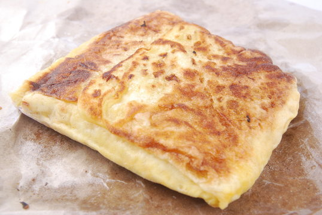

Murtabak
Home

Ingredients
Roti
- 450g (3 cups) Roti flour or plain flour
- 1 tspn salt
- 1 cup warm water
- 1 tblspn Ghee or oil
- 1/2 cup oil
Filling
- 300g Minced Lamb
- 2cm piece Ginger chopped
- 1 large onion, diced
- 1 tspn chilli powder
- 1/2 tspn tumeric
- 1/4 tspn pepper, freshly ground
- 1 clove garlic, chopped/grated
- 1 stalk celery, finely chopped
- 1 onion, sliced
- 1 tspn garam maslal
- salt to taste
- 1/2 cup water
- 2 green chilli, seeded and sliced (optional)
- 2 tblspn coriander leaves, chopped
- 1 cup fresh peas
- 3-4 eggs, beaten
Method
Roti
- Sift flour and salt together.
- Rub in ghee or oil and add water all at once and combine to a soft dough.
- Knead dough for about 10 mins until soft, smooth, and elastic. Depending on the flour, you may deed to add less, the 'flour' will tell you!
- Divide dough into 10 equal balls and place them in a bowl with enough oil to cover.
- Rest for atleast 1 hour.
Filling
- Heat 2 tblspns ghee in a frying pan.
- Fry ginger and diced onion until fragrant.
- Add all the spices except the garam masala and fry for a few minutes
- Add the garlic and celeery.
- Now add the sliced onion and cook adding a bit of oil if it gets too dry.
- Add meat and salt and stir until the meat changes colour, breaking up the lumps of meat.
- Add the garam masala and continue to cook, stirring until all the meat is brown, caramelised.
- Add water and cover.
- When the meat is cooked, add green chilli slices.
- Reduce heat and simmer until mixture appears dry (the moisture has cooked out).
- Allow to cool. Add peas and coriander.
- Season to taste.
Assembly
- Pre heat a griddle pan.
- Take the balls out of the oil and grease down the flat surface with the oil, then roll out as thin as filo pastry, not worrying if you get a few holes. You just need the middle section with out holes.
- Lightly grease the pan and carefully drape the dough over the rolling pin and place it on the hot griddle.
- Working quickly as the dough is very fine and will cook quickly, spoon on beaten egg and spread over the centre with the back of a spoon.
- Spoon over some of the meat mix and sliced onion.
- Fold over all the edges and enclose the filling like an envelope.
- Turn it over to cook the other side, brushing the pan with oil or ghee as you go.
- Keep frying and turning until both sides are crispy and golden in colour.
- Serve hot with cirry, pickled onions or just as is.